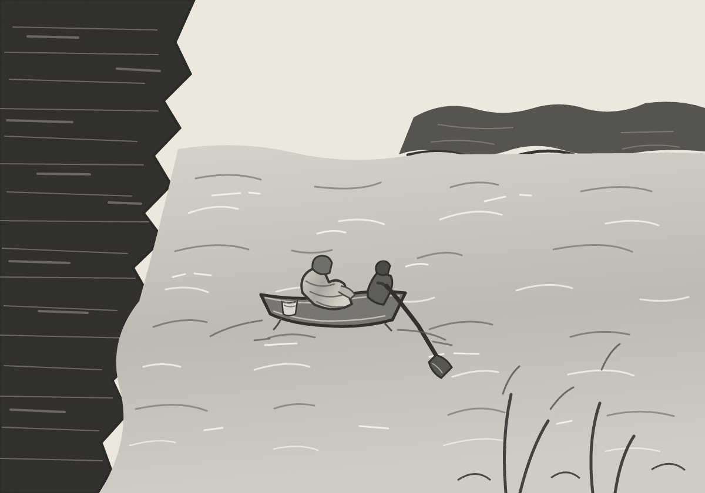
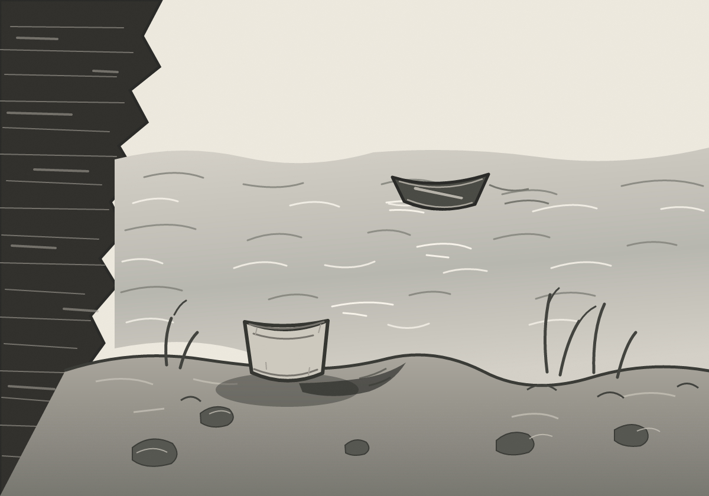

Two Banks, One Oar
A boatman works one oar as a wrapped passenger sits upright beside an ordinary cup. The crossing stays small beneath a dark cliff and a broad river.
A boat carries the dead outward. What does the ferryman bring back for the living?

A boatman works one oar as a wrapped passenger sits upright beside an ordinary cup. The crossing stays small beneath a dark cliff and a broad river.

An empty boat touches the current. On the near bank, a cup's shadow reaches the water. Who brought it back?